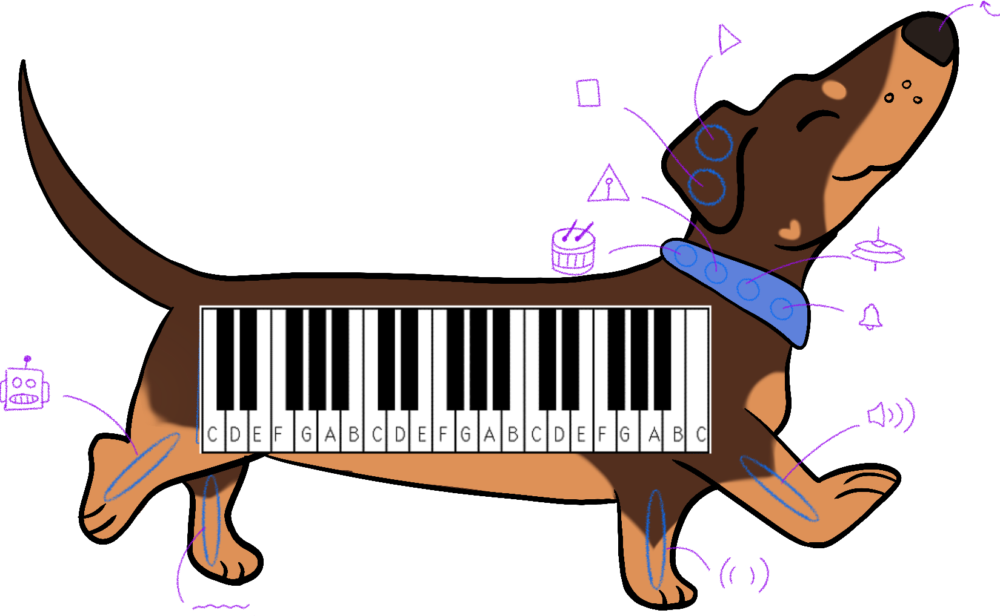
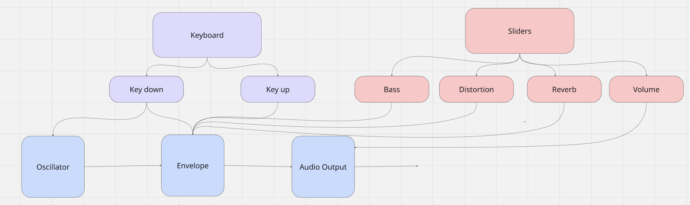

For this project, I was drawn to the concept of ‘No Text Characters’ as it felt like an interesting combination with the piano concept we have been utilising in class. This influenced me to create a children’s piano prototype as they are used for children to experiment and play with rather than learning how to play properly, hence a way I could implement no text characters. For the technique, I chose to include Math.random(). My intended purpose for this is to encourage experimentation. With each randomise, the sliders will change to a random percentage and change how the piano would sound, encouraging users to experiment and try out different ranges or sounds within the piano.
My decision to create a piano in the body of a dachshund was an aesthetic choice, as I noticed a lot of the children’s pianos had the piano keys as teeth or just a piano with a dog attached above (see references).


space
I wanted to have a decision that the silhouette needed to feel immersive. Using my dog as a reference, I played with the idea of having the piano be the body of a dachshund, which allowed the other parts of the dog to be used for sliders and buttons rather than placed in random areas. For example, the sliders are placed for the legs, the randomise button is the nose, the collars have an assortment of instruments to include and the ears can be the play/pause buttons.
space
With all my buttons and sliders, my intention is to have them aid the experience of playing this piano. I want to implement sliders with 10 increments to easily scale how much/little it will affect the piano’s output. I have included buttons with various instrument sound files attached that may aid in immersing oneself into the experience. Most importantly, the randomizer supports this level of experimentation through changing the slider’s values on a scale of 0-10. This would change their values to guide a user through more technical concepts such as reverb or distortion through an impact to the envelope, that will then output the sound to the speakers.
space
The feedback received was very useful in re-shaping how I can further iterate this project. Unfortunately, I was not able to get the audio working for the feedback testing at that stage, however the feedback itself was still able to give me some different perspectives.
The prompts seleceted were:
As I struggled with adding audio into the project, I focused on the position of the buttons and icons as they are the basics of learnability for this project. I need to ensure the buttons and sliders are intuitive for the users to experiment as I can not have text characters to describe the function of each slider or their value.
For the first prompt the responses were varied but overall it’s clear I need to focus on adding audio for users to fully verify the intuitiveness of the buttons. They are easy to remember but their instructions need to be clearer and their placement could be improved. From this, I am considering adding the icons below the sliders instead of above and changing the appearance of the buttons so they stand out from the icons, influencing they can/can not be pressed on, possibly with a hover animation.
The second prompt focused on the overall layout, which was mostly positive and noted that the interesting silhouette adds to the experience. Areas I should focus on from this should be to add something on the tail, add more CSS styling to the buttons and easily distinguishing them from the icons and add learnability to the buttons themselves, as users struggled on how they related to the main experience.